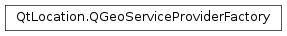

QGeoServiceProviderFactory¶
Inherited by: QGeoServiceProviderFactoryV2
Detailed Description¶
The
PySide2.QtLocation.QGeoServiceProviderFactoryclass is a factory class used as the plugin interface for services related to geographical information.Implementers must provide a unique combination of providerName() and providerVersion() per plugin.
The other functions should be overridden if the plugin supports the associated set of functionality.
-
class
PySide2.QtLocation.QGeoServiceProviderFactory¶
-
PySide2.QtLocation.QGeoServiceProviderFactory.createGeocodingManagerEngine(parameters, error, errorString)¶ Parameters: - parameters –
PySide2.QtCore.QVariantMap - error –
PySide2.QtLocation.QGeoServiceProvider.Error - errorString – unicode
Return type: Returns a new
PySide2.QtLocation.QGeoCodingManagerEngineinstance, initialized withparameters, which implements the location geocoding functionality.If
erroris not 0 it should be set toQGeoServiceProvider.NoErroron success or an appropriateQGeoServiceProvider.Erroron failure.If
errorStringis not 0 it should be set to a string describing any error which occurred.The default implementation returns 0, which causes a
QGeoServiceProvider.NotSupportedErrorinPySide2.QtLocation.QGeoServiceProvider.- parameters –
-
PySide2.QtLocation.QGeoServiceProviderFactory.createPlaceManagerEngine(parameters, error, errorString)¶ Parameters: - parameters –
PySide2.QtCore.QVariantMap - error –
PySide2.QtLocation.QGeoServiceProvider.Error - errorString – unicode
Return type: Returns a new
PySide2.QtLocation.QPlaceManagerEngineinstance, initialized withparameters, which implements the place searching functionality.If
erroris not 0 it should be set toQGeoServiceProvider.NoErroron success or an appropriateQGeoServiceProvider.Erroron failure.If
errorStringis not 0 it should be set to a string describing any error which occurred.The default implementation returns 0, which causes a
QGeoServiceProvider.NotSupportedErrorinPySide2.QtLocation.QGeoServiceProvider.- parameters –
-
PySide2.QtLocation.QGeoServiceProviderFactory.createRoutingManagerEngine(parameters, error, errorString)¶ Parameters: - parameters –
PySide2.QtCore.QVariantMap - error –
PySide2.QtLocation.QGeoServiceProvider.Error - errorString – unicode
Return type: Returns a new
PySide2.QtLocation.QGeoRoutingManagerEngineinstance, initialized withparameters, which implements routing functionality.If
erroris not 0 it should be set toQGeoServiceProvider.NoErroron success or an appropriateQGeoServiceProvider.Erroron failure.If
errorStringis not 0 it should be set to a string describing any error which occurred.The default implementation returns 0, which causes a
QGeoServiceProvider.NotSupportedErrorinPySide2.QtLocation.QGeoServiceProvider.- parameters –
© 2018 The Qt Company Ltd. Documentation contributions included herein are the copyrights of their respective owners. The documentation provided herein is licensed under the terms of the GNU Free Documentation License version 1.3 as published by the Free Software Foundation. Qt and respective logos are trademarks of The Qt Company Ltd. in Finland and/or other countries worldwide. All other trademarks are property of their respective owners.